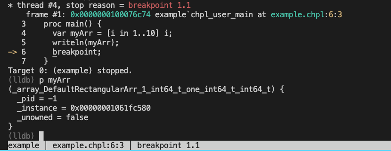
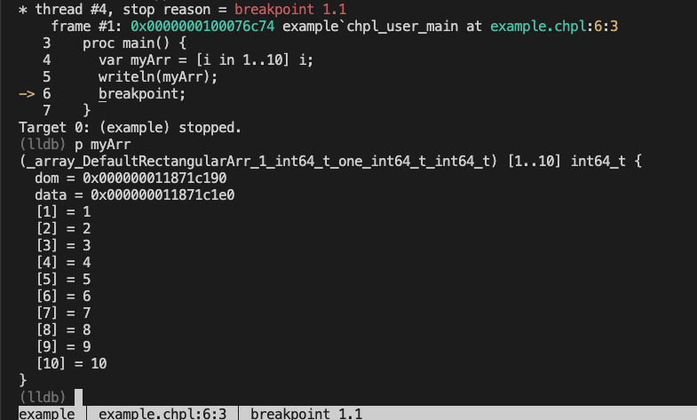
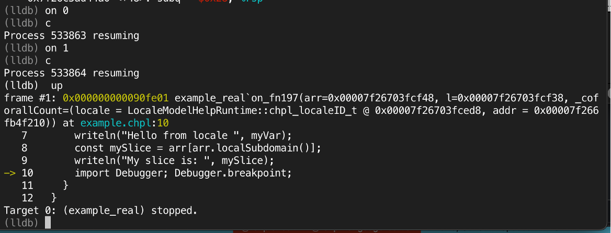
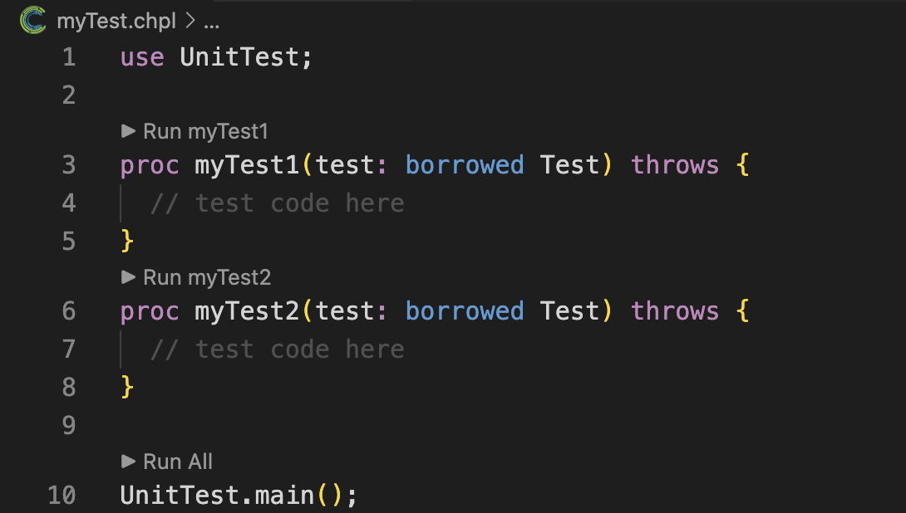
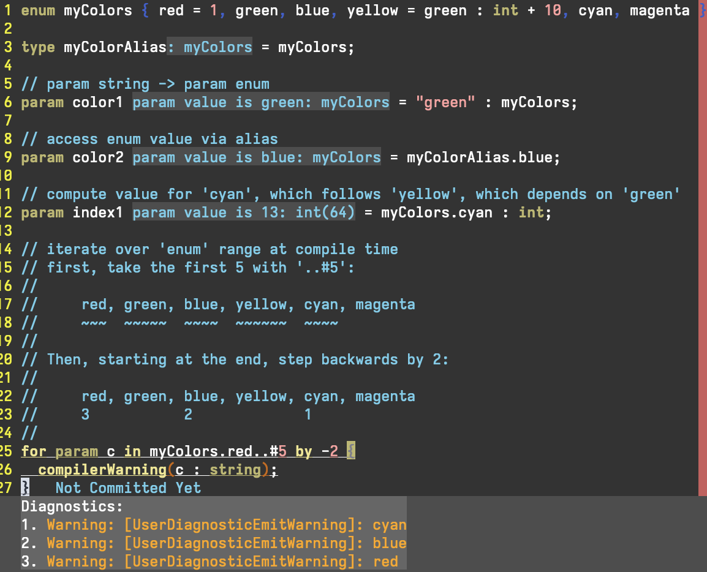
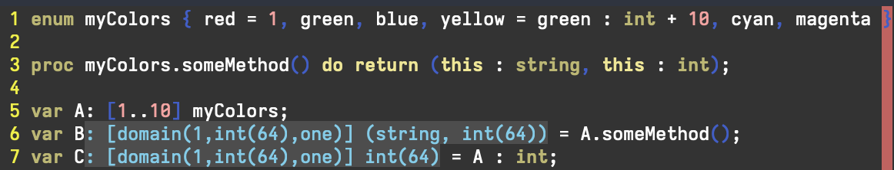

The Chapel community is pleased to announce the release of Chapel 2.6! As usual, you can download and install this new version in a [note:Note that some formats may not be immediately available on the day of the release…], including Spack, Docker, Homebrew, various Linux package managers, and good-old source tarballs.
In this article, we’ll introduce some of the highlights of Chapel 2.6, including:
-
Chapel’s new module for dynamically loading libraries and calling into them
-
Improvements when debugging Chapel programs
-
Improved unit testing with Mason and VSCode
-
Numerous documentation and
chpldocimprovements -
Improvements to the capabilities of the Dyno compiler front-end
In addition to the above features, each of which is covered in more detail below, other highlights of Chapel 2.6 include:
-
Improved support for using address sanitizers with Chapel programs
-
Ongoing capability improvements to Chapel’s tools, such as VSCode, the
chplchecklinter,chpl-language-server, andchapel-py -
Flexibility improvements to the Homebrew and Linux package releases of Chapel, including support for:
- Chapel’s cpu-as-device GPU emulation mode
- support for multi-locale executions with Homebrew installs
- support for both the LLVM and C-based back-ends in Linux packages
In addition, where past Linux packages supported a binary download per Chapel configuration, the 2.6 release bundles all configurations for a given OS/platform into a single binary.
For a much more complete list of changes in Chapel 2.6, see the CHANGES.md file. And as always, thanks to everyone who contributed to version 2.6!
Dynamic Loading Support
This release of Chapel offers improved support for calling procedures from dynamically loaded libraries. This feature was introduced in a prototypical form for the 2.5 release, but in 2.6 it is now supported by all compiler back-ends and has improved stability.
To use this feature, you must first have a shared library that you wish to dynamically load. As a simple example, we’ll create and call into a toy library defined as follows:
|
|
The compiler invocation to create a dynamic library from the C code above should look something like the following, where details may vary depending on your C compiler and platform:
$ clang -shared -fPIC -o libMyAdd.so MyAdd.c
Once your library is compiled, you can write a program to load it
and call myAdd() with just a few lines of Chapel code:
Note that although bin.retrieve() was only called on Locales[0],
the retrieved procedure stored in add can be invoked on any
locale:
In order to use dynamic loading in Chapel at present, the
useProcedurePointers config param must be set to true during
Chapel compilation (this requirement will be relaxed in future
releases). As a result, to compile this example and run it on four
locales, you could use:
$ chpl -suseProcedurePointers=true UseMyAdd.chpl
$ ./UseMyAdd -nl 4
4
6
In addition to supporting traditional shared libraries like this sample C library, this feature also provides initial support for loading and calling into dynamic Chapel libraries whose exported procedures are pure and C-like—for example, ones that don’t rely on Chapel’s runtime or modules. In future releases, we plan to expand loading of dynamic libraries to support arbitrary Chapel procedures.
Debugging Enhancements
Debugging Chapel programs gets even better in version 2.6, with better debug information and new pretty-printers. Historically, debugging Chapel programs has meant interacting with the generated C code. This meant that when inspecting Chapel variables, you would see the internal C representation of those data structures. In this release, we added pretty-printers for LLDB when using Chapel’s C back-end that make it possible to view Chapel data structures using formats that are much more intuitive and user-oriented. This improvement can be seen in the following sample debugging session involving arrays.
In this example, we’ll debug the following simple Chapel program:
|
|
We have used the
Debugger
module’s breakpoint statement to automatically stop execution at
the place of interest in our program when running within a debugger.
To compile this program and run it within LLDB, we use [note:Note that we are working on a
more ergonomic way to disable optimizations and code transformations
when debugging, to avoid the list of flags shown here. This is
being discussed in issue
#27615]
in a configuration that uses Chapel’s C back-end
(e.g., CHPL_TARGET_COMPILER=clang):
$ chpl -g --no-copy-propagation --no-scalar-replacement --no-denormalize --no-munge-user-idents example.chpl
$ ./example --lldb
Upon running the program, we hit the breakpoint statement and can
print out the contents of myArr. Traditionally, that output would
have looked like this:

What we see is a bunch of internal C pointers that are used to implement Chapel arrays. This isn’t very helpful to the typical user, since it looks nothing like the logical array they’d expect.
Now let’s look at the exact same debugging session using the new pretty-printers added in Chapel 2.6:

Now we see the contents of the array printed in a much more familiar
and useful way, and the implementation details we don’t care about
[note:If these details are important
to you, you can still see them by printing the raw data structure
using v -R.]. This is just one example of the new
pretty-printers, which cover a wide variety of built-in Chapel
types, including strings, tuples, ranges, and domains. These new
pretty-printers are available by default as long as you are using
LLDB with Python support enabled.
We also made some great improvements to the debug information that
the Chapel compiler generates. The best example of this is with
enums. The debugger now has enough information to print out the
names of the enum symbols instead of the underlying integer
values. This makes it much easier to understand what is going on in
your program. These improvements also lay the groundwork for
additional improvements in the future.
Prototype Parallel Debugger
The Chapel 2.6 release also includes a new tool,
chpl-parallel-dbg. This tool enables vastly improved debugging of
multilocale Chapel programs, which has been a longstanding
challenge. It works by launching a debugger on each locale of a
Chapel program, and then connecting them all together with a single
interface.
In the following example, we’ll demonstrate the use of
chpl-parallel-dbg on this multilocale Chapel program:
|
|
This session shows the program running on two locales, where we
switch between them using a custom on command that mirrors the
Chapel syntax. To get each locale running, we use a c (continue)
command, and then are notified once we hit one of the breakpoints.
Note that the up command is performed automatically for us by the
tooling to ensure that we’re in the user-level Chapel code.

This new tool is still a work in progress, but it’s already a huge step forward for debugging multilocale Chapel programs. To learn more about it or to try it yourself, see its documentation. We are excited to continue improving this tool in future releases.
Unit testing Improvements for Mason and VSCode
This release also includes many significant improvements to
mason,
Chapel’s package manager, primarily focused on improving the
developer experience when testing. We fixed many bugs with mason
itself and added some new testing features. For example, suppose we
have a simple program defining some unit tests:
This can be run, standalone, using:
$ chpl myTest.chpl
$ ./myTest
However, using mason we can just run:
$ mason test myTest.chpl
and it will handle compilation and execution, while also generating a nice report for us:
----------------------------------------------------------------------
Ran 2 tests in 18.6117 seconds
OK (passed = 2 )
Chapel 2.6 also adds the ability to selectively run tests by name. For example, this command:
$ mason test myTest.chpl --filter myTest1
will only run the myTest1 test. This is particularly useful when
you are working on a specific test and don’t want to run the entire
suite.
We also integrated testing into VSCode, so that you can run (and in the future, debug) tests directly from the editor!

This creates a much smoother workflow for developing and testing Chapel code from the comfort of a GUI.
Documentation Improvements
Each Chapel release typically includes a handful of documentation improvements, usually motivated by the features being added or improved during that release cycle. This release cycle saw a larger than normal set of documentation improvements, due to documentation week. This was a dedicated week focused on improving documentation and documentation-adjacent aspects of the project. We frequently find it healthy to dedicate a week shortly after each release to focus on some housekeeping task. Instead of juggling these important, ongoing efforts with other priorities, it allows us to make rapid progress in a short period of time, and also feels like a nice break from normal work. Past dedicated weeks have focused specifically on cleaning up nightly testing or resolving user issues, and for this release it made sense to focus on documentation.
During documentation week, we resolved and closed 23 outstanding
issues. We fixed bugs with our chpldoc documentation tool and
added the ability to search our online documentation for compiler
flags (like this
search
for --fast). As part of refactoring our multilocale
documentation,
we added or extended pages on using the Elastic Fabric Adapter
(EFA)
network interface for
AWS,
Ethernet
clusters,
and GASNet’s SMP
conduit
for running multiple locales on shared memory. Additionally, this
release saw the introduction of documentation on sanitizer
tools,
and general improvements to our debugging
documentation.
We also made extensive progress in updating code examples in documentation to support nightly testing. Our enthusiasm for this effort carried over into subsequent weeks, such that for version 2.6, we ultimately added testing for examples in 45 libraries and 9 technotes! As a result, we were able to identify and fix many examples that had gotten out-of-date due to improvements to the language.
As a result of all these efforts, Chapel’s online documentation is
now more searchable, more accurate, and more robust to future
changes; and chpldoc itself is better than ever!
Improvements to the Dyno Compiler Front-End
As you may have seen in previous release
announcements, Dyno is
the name of our effort to modernize and improve the Chapel compiler.
Dyno improves error messages, allows incremental type resolution,
and enables the development of language tooling. Among the major wins for this ongoing effort is
the Chapel Language Server
(CLS),
which was previously featured in a blog post about editor
integration, not to mention Chapel’s
linter, VSCode support, and chpldoc.
Our team has been hard at work implementing many features of Chapel’s type system in Dyno, which—among other things—will enable tools like CLS to provide more accurate and helpful information to users. In the 2.6 release, we have continued to improve Dyno’s support for Chapel’s language features, and we’ve also expanded the compiler’s ability to leverage the Dyno front-end to generate executable code.
More Language Features
This release includes new support for resolving additional language features with Dyno, where some notable examples include:
- various aspects of
enums, including casting and iteration - promotion, particularly with methods and compiler-generated operations
- type queries, particularly for tuples and variadic formal arguments
The following screenshot shows an editing session in which Dyno-inferred type information is rendered in-line when editing the following code example.
enum-aspects.chpl
|
|

There’s a lot going on here! As can be seen in the inferred type
of color1, Dyno now supports casting param (compile-time
constant) strings to enum values. The inferred type of color2
demonstrates accessing an enum constant (blue in this case) via
a type alias (myColorAlias). Finally, index1 stores the numeric
value computed for cyan, which Dyno now correctly infers to be
13.
The most involved example is the for param loop. Chapel’s
semantics allow for compile-time iteration over certain ranges,
which effectively completely unrolls the loop. Dyno, like the
production compiler, now supports iteration over ranges of enums
(in addition to ranges of integers). Moreover, Dyno properly
handles complex patterns of iteration, such as those that use the
count operator (#) and the stride specification by -2. The
compiler warnings generated within the loop body show the values
that c takes on during the unrolling of the loop.
In this next example, you can see the improvements to Dyno’s support for promotion.
promotion.chpl
|
|

Here, we re-use the myColor enumeration type. We define a new
method on this enum, called someMethod, then invoke this method
on an array of colors, A. Since this method produces a tuple of a
string and an integer, applying it element-wise to the array A
results in an array of tuples, which is the type that Dyno infers
for B. Chapel’s compiler auto-generates casts from enums to
their specified int values where possible; in the example, we also
apply this cast element-wise to A, resulting in an array of
integers, which is the type that Dyno infers for C.
Generating Executable Code
This release also saw improvements to our support for using
Dyno to generate executable code, which is a major step toward
Dyno’s goal of replacing the front-end of the production
compiler. This is an ongoing process that involves taking the
information that Dyno has computed about the program and generating
AST for the production compiler, essentially skipping over its
historical type resolution and analysis phases. This capability is
enabled using the --dyno command-line flag.
Initial support is limited to a subset of Chapel’s language features, but is growing all the time. Here is an example program and helper module that Dyno can now compile, demonstrating uses of classes, records, and strings:
|
|
Print.chpl
|
|
Stay tuned as we continue to add support for more features to Dyno!
For More Information
If you have questions about Chapel 2.6 or any of its new features, please reach out on Chapel’s Discord channel, Discourse group, or one of our other community forums. In addition, we’re always interested in hearing about how we can make the Chapel language, libraries, implementation, and tools more useful to you.
| Date | Change |
|---|---|
| Sept 26, 2025 | Fixed dynamic library calls to use c_int rather than int |